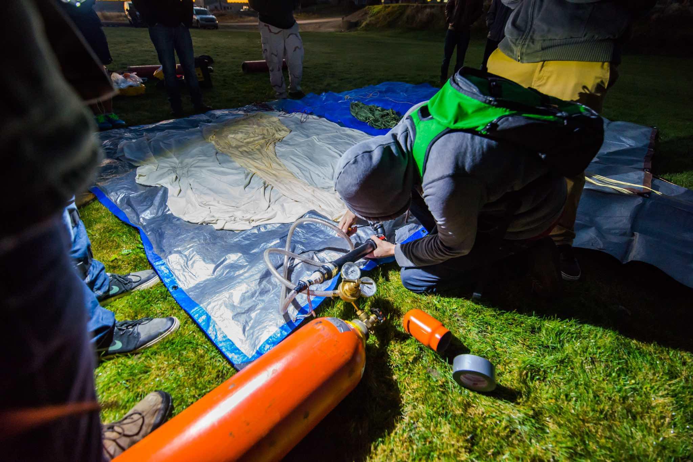
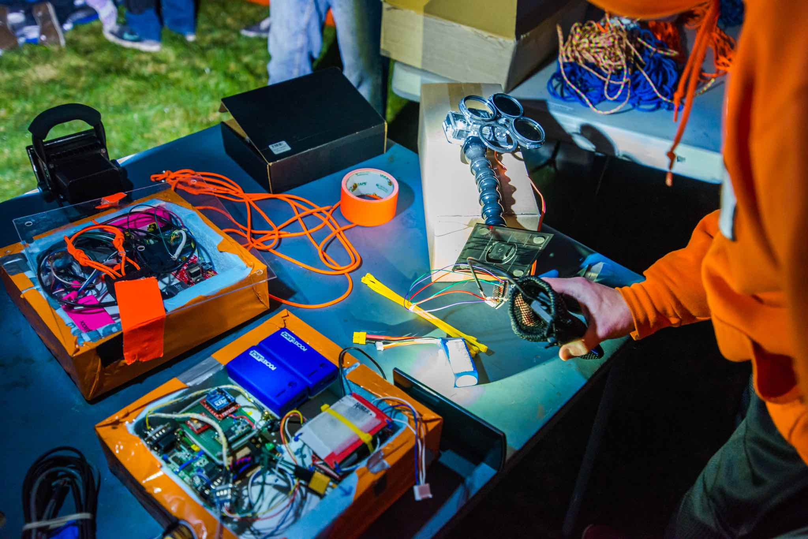

VAST is a student organization at the University of Idaho in affiliation with NASA. Every semester we launch a high altitude weather balloon to learn more about designing circuits, communicating with satellites, employing remote measurement devices, and understanding the mechanics, such as strength, resistance to fatigue, and stiffness, of our materials.
 Figure: An early morning balloon launch. We often launch balloons just minutes after sunrise to avoid the higher winds present during the day.
I led a team of students pioneering a system to make VAST balloon launches more green. Past launches used batteries to power critical systems, but I designed and built a system that would test how much solar power was available during the flight.
 Figure: The balloon payload. The balloon carries a package of tracking and measurement devices to complete it's mission.
Currently, I am a project lead for our experimental guided parafoil. I am in charge of a small team of 3 other students developing and researching a system to guide our balloon's descent. My project aims to prevent the balloon from traveling too far from its launch position during descent by steering the balloon to a known location.